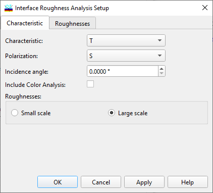

Interface Roughness Characteristic
Interface Roughness Characteristic
Navigation: OptiLayer Menu Commands > Analysis Menu > Interface Roughness >
Interface Roughness Characteristic
` <integsystev.html>`__ ` <idh_menu_analysis.html>`__ ` <roughnesses.html>`__
Use the Characteristic page of the Interface Roughness Setup window to set the spectral characteristics for the Interface Roughness analysis. Interface Roughness analysis can only be performed for one characteristic, one polarization state, and one angle of incidence at a time.

It is possible to include Color Analysis in order to evaluate the changes in color characteristics due to the roughness. If this option is selected, an additional Color Roughness Evaluation window will be opened.
The OK button accepts the specified data and starts the Interface Roughness Analysis procedure. Its results are displayed in the Roughness Evaluation window.

Note: The “Back Side” option setting of the substrate is ignored during Roughness Evaluation, and computations are performed for a semi-infinite substrate.
See also: